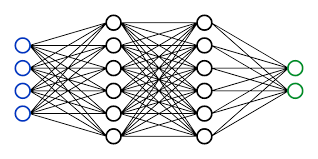
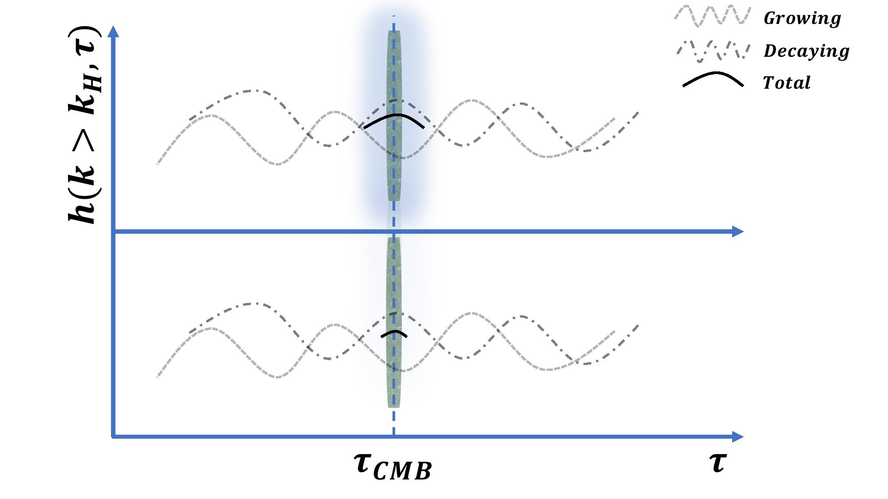
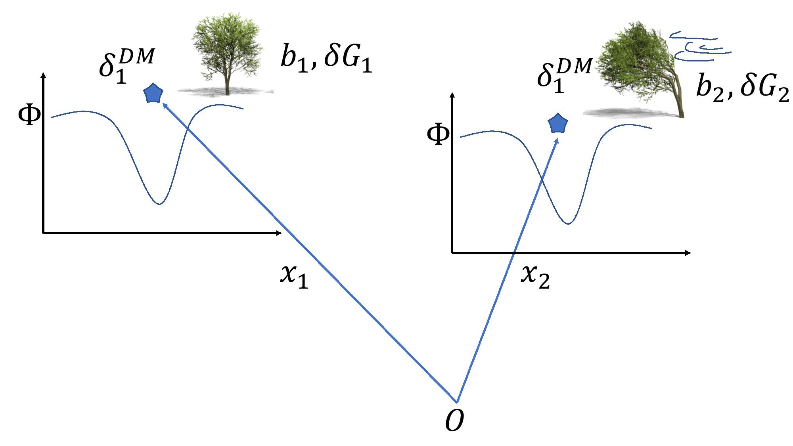
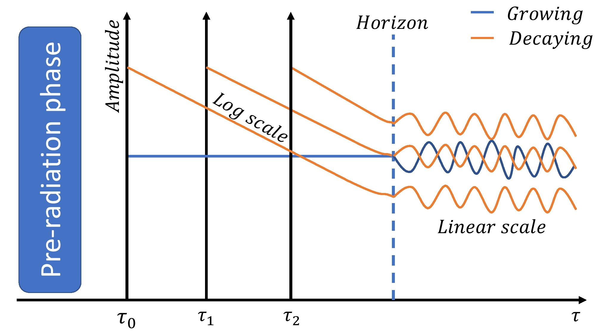
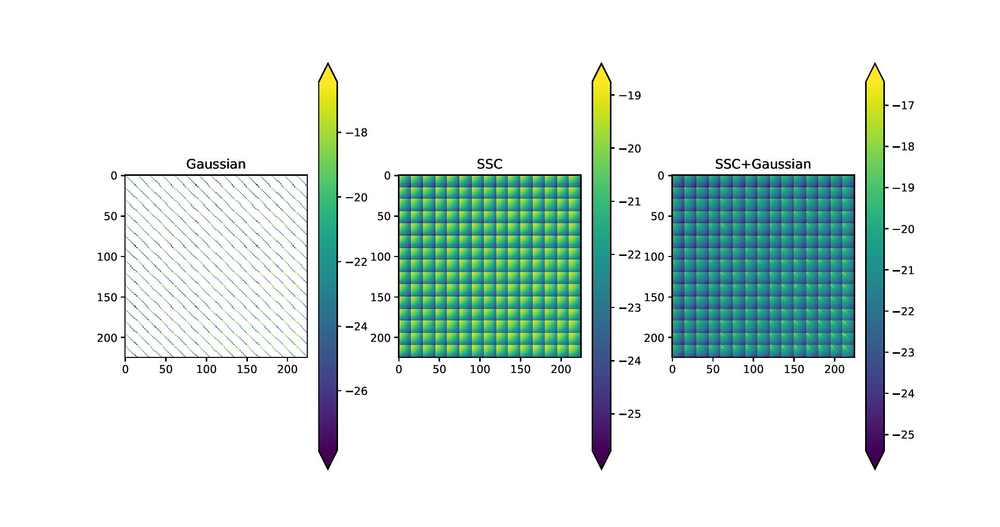
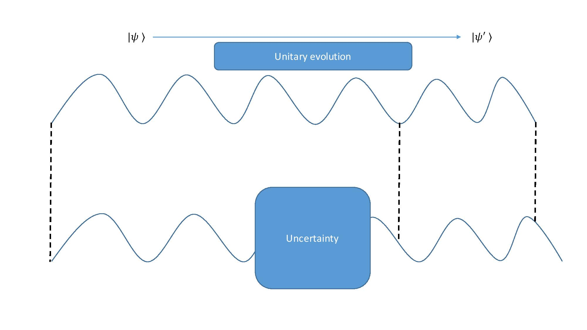
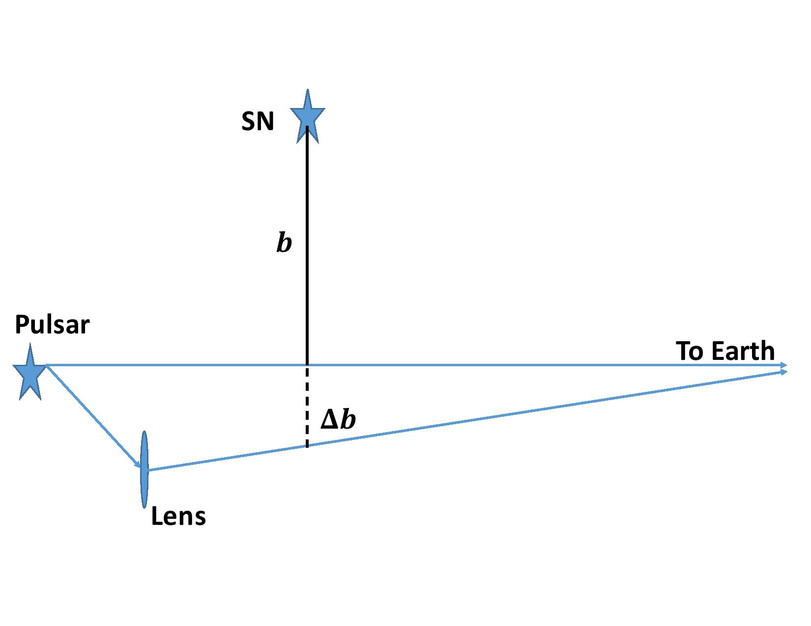
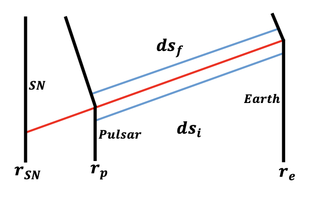
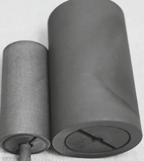

Origin and evolution of the universe
The thesis reflects broad interests across cosmological theory, perturbations, and early-universe dynamics, combining analytical modeling with data-facing implications.
Darsh’s research spans theoretical physics, cosmological data analysis, and ML-driven scientific methods. The unifying thread is first-principles reasoning paired with practical computational techniques.
Early work focused on gravity, black holes, and cosmological perturbations; recent work includes deep learning methods for CMB reconstruction and statistical inference.
9 peer-reviewed publications across JCAP, Physical Review D, Open Journal of Astrophysics, and related journals.
The thesis reflects broad interests across cosmological theory, perturbations, and early-universe dynamics, combining analytical modeling with data-facing implications.

Introduces PCNN-based inpainting for masked CMB maps, reaching very high reconstruction fidelity and showing the practical value of deep learning in precision cosmology.

Explores observational consequences of decaying tensor modes without locking to a specific early-universe model, and studies resulting CMB signatures.

Computes modified-gravity signatures in parity-breaking galaxy correlations, linking screening physics to potentially observable large-scale structure effects.

Analyzes decaying scalar perturbation modes and quantifies their potential CMB impact through both analytical development and numerical treatment.

Tests when covariance-matrix parameter dependence materially impacts parameter estimation, showing practical regimes where simplifying assumptions remain reliable.

Develops a consistency framework around assumptions in the black-hole information problem, focusing on unitarity constraints in Hawking-radiation propagation.

Studies how relativistic neutrino shells from supernovae perturb geometry and generate measurable signatures in pulsar scintillation and interferometric setups.

Shows characteristic timing-derivative signatures in pulsar signals induced by nearby supernova events, outlining potential detectability with stable millisecond pulsars.

Presents stable zinc-bismuth and aluminum-indium monotectic alloy fixed-point cells with robust phase-transition plateaus for calibration workflows.